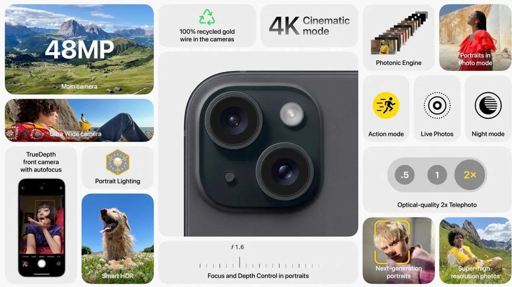
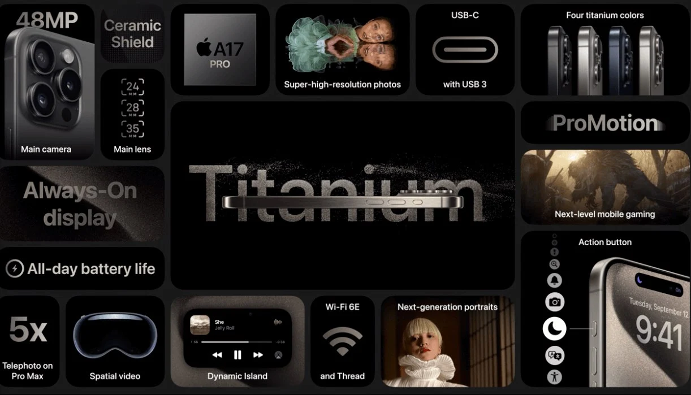
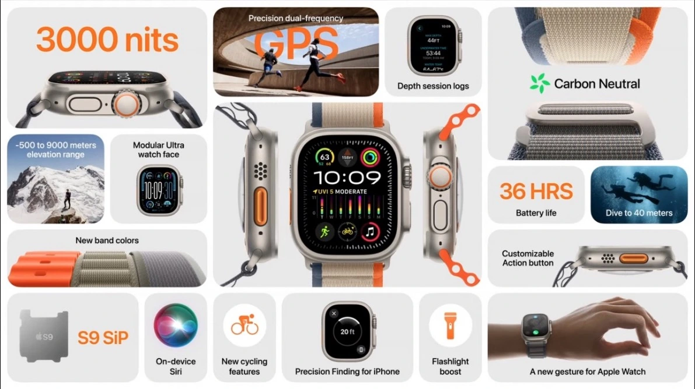
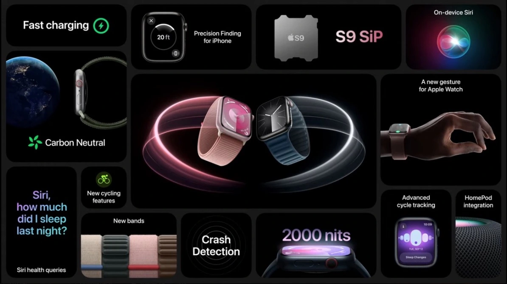
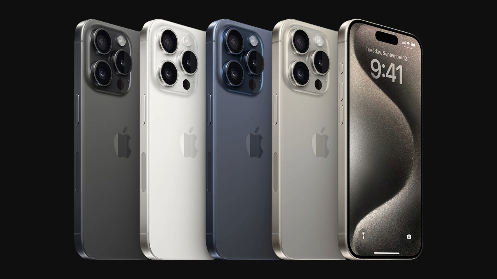
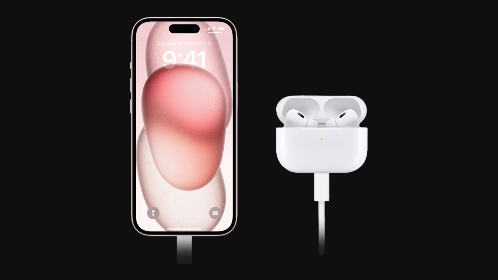
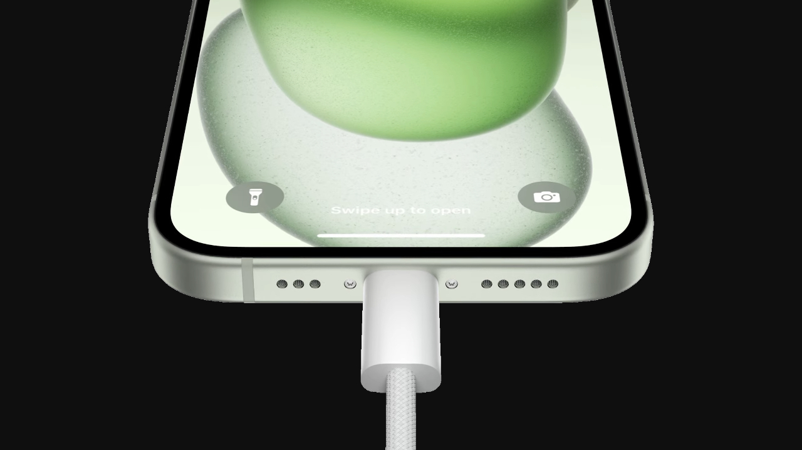

Команда Apple на чолі з Тімом Куком розпочала довгоочікувану презентацію Apple 2023 Wonderlust як завжди вчасно і дивовижно яскраво. І затамувавши подих, усі фанати особливої техніки від особливого бренду, завмерли в очікуванні анонсу гарячих новинок. Отож, пропонуємо познайомитись ближче з новими технічними витворами від кращих творців з Купертіно, які представили на цьогорічному заході.
Що показали Apple: iPhone 15, Watch Ultra 2, Watch 9
Нові моделі iPhone 15
Що показала Apple на презентації? Нові моделі iPhone 15.
Головними зірками презентації, як і очікувалось, стали нові смартфони Apple iPhone:
- iPhone 15
- iPhone 15 Plus
- iPhone 15 Pro
- iPhone 15 Pro Max
Базові варіанти iPhone 15 та iPhone 15 Plus отримали ряд вагомих оновлень:
- Яскраві дисплеї з діагоналлю 6.1 та 6.7 дюйма.
- Підтримка частоти оновлення 60Hz.
- Тонші рамки навколо екрана, більш округлі кути.
- Оновлений чип Apple A16 та 6GB оперативної памʼяті.
- Апгрейд основної камери до 12 Мп + 48MP.
- Нові режими та можливості портретної зйомки.
- Порт зарядки та синхронізації USB-C замість Lightning.
- Збільшена ємність акумулятора і відповідно час роботи.
Класична лінійка смартфонів Епл Айфон 15 вийде у світ у пʼяти кольорах:
Black, Green, Pink, Yellow, Blue.
На борту розробники
встановили оперативну памʼять обсягом 6GB, а також додали на вибір кілька обʼємів внутрішнього
сховища:
128GB, 256GB, 512GB.

Флагмани iPhone 15 Pro та iPhone 15 Pro Max також мають чим похизуватись:
- Яскраві дисплеї з діагоналлю 6.1 та 6.7 дюйма.
- Підтримка частоти оновлення ProMotion 120Hz.
- Ультратонкі рамки навколо екрана, більш округлі кути.
- Титанова рамка по периметру корпуса.
- Нова кнопка Action з можливістю налаштування.
- Оновлений чип Apple A17 Pro та 8GB оперативної памʼяті.
- Порт зарядки та синхронізації USB-C замість Lightning.
- Збільшена ємність акумулятора і відповідно час роботи.
Новинки з лінійки Pro вийдуть у світ у чотирьох кольорах, що неймовірно підкреслюють текстуру титану.
На борту розробники встановили оперативну памʼять обсягом 8GB, а також додали на вибір кілька обʼємів
внутрішнього
сховища: 128GB, 256GB, 512GB та 1TB.

Apple Watch Ultra 2
Смарт-годинник Apple Watch Ultra 2 вразив не лише ультрасучасним оснащенням, а й важливими змінами в плані енергоефективності та екологічності дизайну.
Та якщо повернутись до технічних переваг нового Епл Вотч Ультра 2, то варто звернути увагу на такі характеристики:
- Потужний чіп Apple S9 для ще більшої продуктивності.
- Яскравість дисплея зросла до 3000 ніт.
- Нові циферблати з даними в режимі реального часу.
- До 36 годин роботи, та 72 години в режимі енергозбереження.
- Розширена підтримка сторонніх спортивних аксесуарів.

Apple Watch Series 9
Чергове покоління смарт-годинників Apple Watch Series 9, здавалось би, що немає чим здивувати. Проте розробники вкотре доклали зусиль, щоб пропрацювати начинку гаджетів.
Серед основних змін у характеристиках Епл Вотч 9 варто відзначити:
- Потужний чіп Apple S9 для ще більшої продуктивності.
- Дисплей Always-On з яскравістю 2000 ніт.
- Графічний чіп на 30% швидший.
- Удосконалена робота Neural Engine.
- Покращена робота модулів Siri+Health.
- Чіп Ultra Wideband 2.
- Поширення контактів watchOS 10.
Також новинка отримала нові кольори: Pink, Starlight, Silver, Product Red, Midnight.
І не залишили поза увагою сталеві версії моделей — Silver, Graphite, Gold.

Action-кнопка на iPhone 15 Pro: що вона вміє?
На недавній презентації Wonderlust Епл анонсували 15-те покоління своїх фірмових смартфонів, яке знову складається з 4 моделей. Як вже звиклось, iPhone 15 Pro Max отримали найбільше нових “фішок”, найцікавішою з яких, мабуть, стала кнопка Дії. Вона замінює однофункціональний перемикач беззвучного режиму, який вірою і правдою служив нам ще з часів першого iPhone.
За принципом роботи Action-кнопка iPhone 15 Pro нагадуватиме однойменну клавішу Apple Watch Ultra — за замовчуванням вона все ще перемикатиме беззвучний режим, але може бути застосована для увімкнення інших функцій.
Ось всі з них:
- Вимкнення режиму Зосередження.
- Увімкнення камери.
- Запис голосової нотатки.
- Запуск програми ліхтарик.
- Увімкнення режиму доступності.
- Перекладач (підтримка з'явиться в наступних оновленнях iOS 17).
- Виконання будь-якої команди, прив'язаної користувачем.
Також очікується, що додаткові команди Action-кнопки зможуть створювати розробники сторонніх застосунків для iPhone.
Щоб активувати прив'язану до клавіші функцію, достатньо натиснути її й утримувати протягом однієї-двох секунд. Змінити обрану команду або встановити нову можна буде в спеціальному зручному меню в Налаштуваннях смартфона.
На вже згаданому Apple Watch Ultra 2 кнопка Дії різко виділяється своїми розмірами та помаранчевим забарвлення. Своєю чергою на iPhone 15 Pro вона буде більш делікатною, маючи такі ж габарити, як і класичний перемикач беззвучного режиму.
Кнопка дії, хоча й не значна, на перший погляд, але є однією з небагатьох змін зовнішнього вигляду iPhone за багато років, котра зробить користування новинкою ще більш приємним. Однак вона є ексклюзивною для цьогорічного лайнапу Про, тож, якщо з якоїсь причини ви захочете уникнути дане нововведення — на допомогу прийде базовий iPhone 15 або iPhone 15 Plus, які все ще будуть оснащені класичним перемикачем.

iPhone 15: нові можливості акумулятора
Нові смартфони Apple iPhone 15 та iPhone 15 Pro Max можуть похизуватись відмінними показниками автономності та тривалим часом роботи від акумулятора, не зважаючи широкий спектр важливих нововведень та системних доповнень. Термін служби акумулятора є критично важливим показником для будь-якого смартфона. Він визначає практичність використання гаджета, а також його автономність та витривалість упродовж років.
Кожен акумулятор розрахований на певну кількість “життєвих циклів”, тобто зарядки від 0% до 100%. Однак особливість літій-іонних батарей полягає в тому, що постійне заряджання до 100% призводить до передчасної втрати максимальної ємності. Мало хто з користувачів приділяє цьому достатню увагу, хоч саме така проблема є однією з головних причин втрати вашим смартфоном колишньої автономності.

Виробники, однак, давно знають про даний нюанс і стараються зводити його вплив до мінімуму. Найбільш ефективним рішенням для айфонів є “Оптимізована зарядка акумулятора” — функція, яка аналізує ваш розпорядок дня і регулює зарядний процес таким чином, щоб ви отримали 100% заряду в момент відключення смартфона від кабелю.
Наступним еволюційним кроком цієї функції є “обмеження заряду” — певне граничне число, скажімо 90%, яке може встановити сам користувач для того, щоб таким чином продовжити термін служби батареї. Ця функція вже застосовувалась на смартфонах Android, де довела свою практичність, а останні витоки інформації стосовно iOS 17 стверджують, що така можливість з'явиться й у власників iPhone 15.
Чи буде вона доступна для всіх iPhone, сумісних з iOS 17, наразі невідомо, але щасливі власники новенького 15-го покоління смартфонів Купертіно точно зможуть ознайомитись з цією “фішкою” в меню "Налаштування акумулятора" вже після 22-го вересня.
Швидкість зарядки iPhone 15 Pro: що відомо?
За інформацією, якою ділиться японський блог Mac Otakara, нові моделі базових Айфон 15 та флагманські смартфони з лінійки Айфон 15 Про здатні підтримувати пікову швидкість зарядки до 27 Вт під час використання адаптера живлення USB-C. Поки немає даних, звідки саме веб-сайт отримав цю інформацію, але, це частково підтверджує, що моделі Айфон 15 Про Макс мають таку саму максимальну швидкість зарядки, що й моделі iPhone 14 Pro Max.
Ще у серпні ресурс 9to5Mac повідомив, що флагманські моделі Айфон 15 зможуть підтримувати швидкість зарядки до 35 Вт, але ці чутки не справдились. Команда розробників Apple заявляє, що, як і варіанти смартфонів попереднього покоління, всі чотири моделі iPhone 15 можуть заряджатися до 50% за приблизно 30 хвилин за допомогою адаптера живлення потужністю 20 Вт або вище.
Торік веб-сайт ChargerLAB визначив, що адаптер живлення Apple USB-C потужністю 30 Вт є найдешевшим зарядним пристроєм компанії, який може заряджати моделі iPhone 14 Pro з максимальною швидкістю зарядки до 27 Вт, і це, ймовірно, залишиться актуальним і для лінійки iPhone 15 Pro. Реальні випробування та тести ще належить завершити, але зараз схоже, що чутки про підтримку 35 Вт виявилися помилковими.
